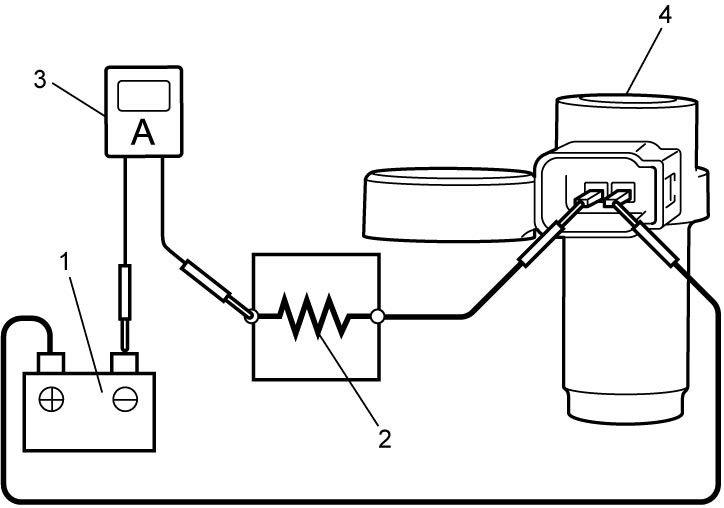
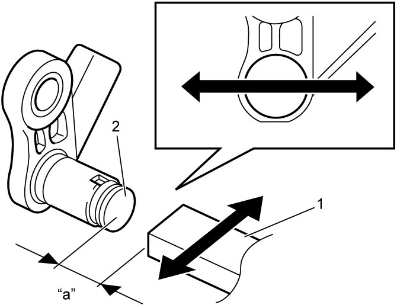

5A
| Input Shaft Speed Sensor Inspection |
1)Remove input shaft speed sensor. 
2)Check the following point.
•End face of input shaft speed sensor and direct clutch drum teeth are free from any metal particles and damage.
3)Check input shaft speed sensor as follows.
If faulty condition is found, replace input shaft speed sensor.

If faulty condition is found, replace input shaft speed sensor.
a)Connect battery (1), resistance and ammeter (3) to input shaft speed sensor connector (4) as shown in figure.

 "Expand image")
| 2. | Resistance (100 Ω) |
b)Check that current through input shaft speed sensor changes to specified value when ferromagnetic material (iron) (1) passes in front of input shaft speed sensor (2).
NOTE:
The gap “a” between ferromagnetic material (iron) and end face of input shaft speed sensor must be 5 mm (0.19 in) or less.
Input shaft speed sensor current
Current alternates between 4 – 8 mA and 12 – 16 mA

 "Expand image")